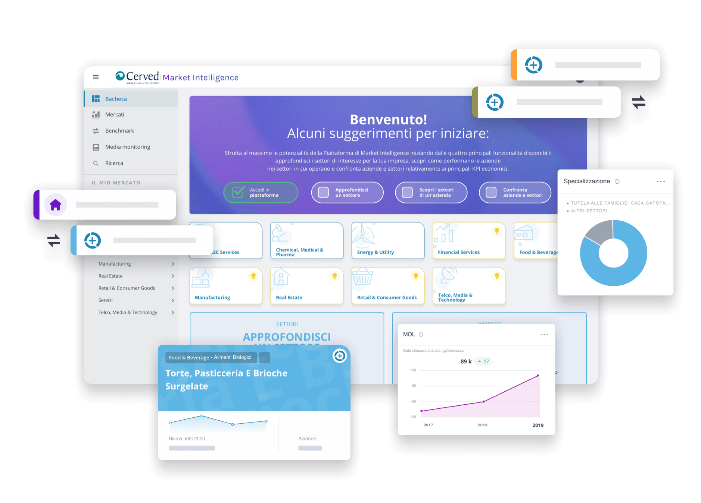
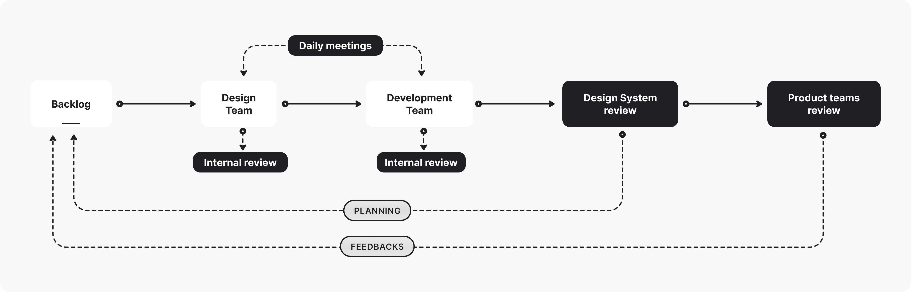
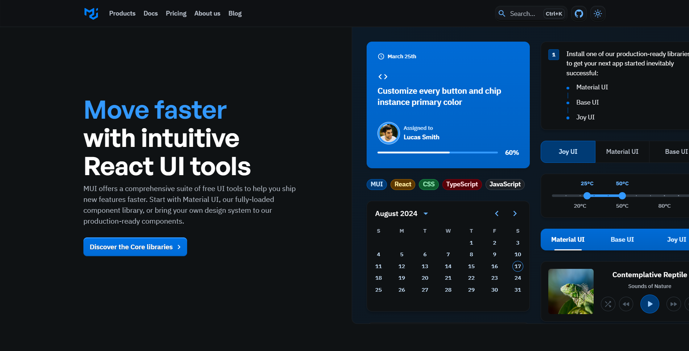

As a User Experience Designer at Cerved Group I worked on the design and development of digital products for corporate clients in the financial and banking industries.
Moreover I was part of the team that planned, designed and executed the release of the Cerved Design System.
Cerved platforms
Skills and tools applied
Figma
Data visualization
User feedbacks
Charting libraries
I started my work at Cerved as a designer focusing on the improvement of the main products of Cerved Group, in
particular the Marketing Intelligence platform and Cerved Credit Suite.
Both products provide data and information about companies, markets, credit risk and
financial analysis.
They are used by thousands of customers in Europe such as Accenture, PWC, Trenitalia and Poste italiane.
My contribution to these platforms was gathering customer feedbacks about the data visualization in order to define new and more
accurate charts and indicators to represent the data.

The goal of these activities was improving usability and readability of the data shown while simplifying the information retrieval for the end user.
 The Market intelligence platform
The Market intelligence platform
From Sketch to Figma
Skills and tools applied
Sketch
Figma
Video courses

Isn't there a simpler tool to do this?
- Too many designers
Since the design team had been using Sketch as their main design tool and there were many issues with it, I proposed to move our projects and
operations to Figma in order to improve the efficiency and features available to all designers.
In order to achieve that I researched and planned a transition with the different project teams. I supported their
organization and the rework needed in terms of files, resources, components and libraries to be moved onto the new tool.
After the initial phase of transition I supported the entire design team through publishing learning resources on
best practices on how to utilize Figma, in the form of video pills, courses and template resources.
 The entire process took about two months and the increase of speed and efficiency with which the design team could
produce new assets was tangible, making the transition worthwhile.
The entire process took about two months and the increase of speed and efficiency with which the design team could
produce new assets was tangible, making the transition worthwhile.
B2B corporate clients
Skills and tools applied
User interviews
Service blueprints
Prototypes
User stories
Usability tests
My main activity as a UX designer has been through the design and development of several digital products for corporate clients such as BNL, Banco Desio .
For each project I was part of a Scrum team composed by developers, data scientists, Product owner and Scrum master.
My role was evenly distributed throughout all the different phases of the projects.
Starting from the business evaluation of the client requests, I would assist the product owner and business analysts in defining the requisites of the proposed solution.
In this phase I would perform customer and user interviews to gather insights and explore alternative solutions to propose to the board of stakeholders, leading workshops and meetings.
In the second phase I was tasked with designing user journeys, personas and service blueprints, in order to define a preliminary version of the product offered to the client.
In this phase I would also combine different requirements from developers and data scientists, regarding technologies implemented and variations to the client requirements.
After this I would create mock-ups and prototypes with Figma that represented the actual front-end flows the user would interact with.
Also at this stage I would assist the Product Owner in defining user stories and managing the product backlog in Jira.
I would also follow the development process through each sprint and gather user feedbacks with usability tests and analysing user interactions.
Banco Desio Digital Credit, a digital lending platform for small businesses
Cerved design system
Skills and tools applied
Design Systems
Design tokens
UI components
Storybook
One of the biggest projects I was involved in was the development of the internal design system, following the
transition to Figma tokens.
I was part of the design team tasked with the organization, design and maintenance of the Design System
utilized by all the Product teams in Cerved to develop new products.
This project has been a direct collaboration with the development team, and involved more than twenty people.
The first step was clustering all the foundational elements of the company, such as: color styles, typography, UI
elements, front-end frameworks and technologies utilised by all the different teams.
Subsequentially, we defined a common ground of practices and values that were shared between the various product teams.
From there we planned a roadmap for the design and development of the various assets and foundations of the new design system.
We decided to structure the organization of the work with two teams, one composed by designers and one by developers. This in order to separate the activities of design and development and speed up the internal processes.
Each team would have a separate Backlog of activities, enabling designers to produce the assets that would drive the development of the actual components of the design system.

Communication was kept daily between the teams, with a minimum of one review per week of the work done and the planning of following activities.
Every two weeks we held a more structured review with all different product teams of the company (roughly 100 people) where we would preview the progress of the project, release assets completed and gather feedbacks.
As a starting point for the structure of the code we utilised the Material UI component library. This helped as a starting ground for the development team on which we implemented custom elements for patterns and components.
figure>

Gitlab was the choice for the code repository and enabled us to structure issues for code reviews and feedbacks directly from the product teams.
Once the assets, components and pattern were developed we set up Storybook as a tool for documentation and single source of truth.
This helped simplify the communication with design and develepment teams of the various products and projects inside the company.
In addition to that, we set up a serie of courses and events, where each single project team was instructed by the Design system team on how to utilize the components, patterns and foundatoins.